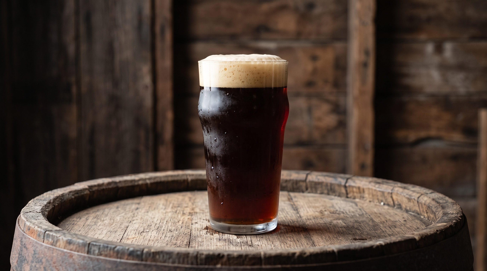
Dunkel
5.0% ABV
Baixa Fermentação
Baviera
Estilo clássico da Baviera de cerveja escura. Apresenta notas marcantes de malte torrado, pão tostado e suave amargor no final.
ABV
5.0%
IBU
20
TEMP
4-8°C
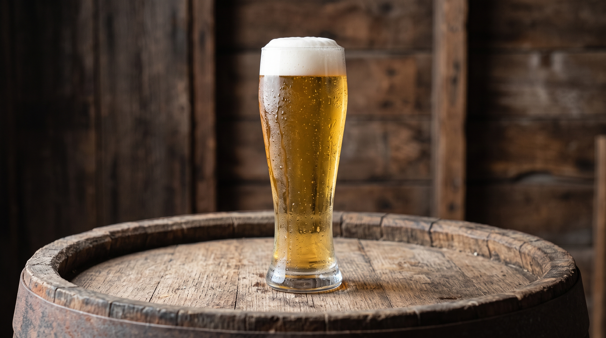
Pilsen
4.8% ABV
Baixa Fermentação
Boêmia
Estilo leve e refrescante ligado à tradição da Boêmia. Perfeita para qualquer ocasião, com amargor limpo e aroma floral.
ABV
4.8%
IBU
15
TEMP
2-4°C
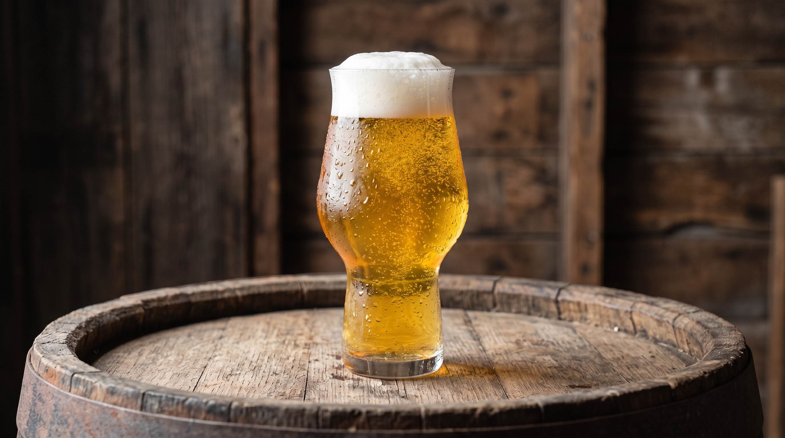
Munich Helles
5.2% ABV
Baixa Fermentação
Munique
Cerveja de perfil suave e predominantemente maltado, criada para rivalizar com as pilsners tchecas mantendo o sabor encorpado de Munique.
ABV
5.2%
IBU
18
TEMP
4-7°C
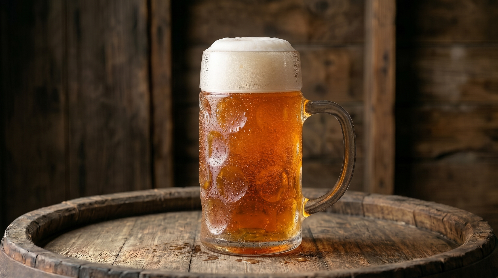
IPA
6.5% ABV
Alta Fermentação
Inglaterra / EUA
Estilo famoso por seu amargor pronunciado e aroma intenso. Apresenta notas marcantes de lúpulo, que variam de citrinos e resinosos a florais e frutados, acompanhadas por um leve suporte de malte.
ABV
6.5%
IBU
50
TEMP
4-8°C
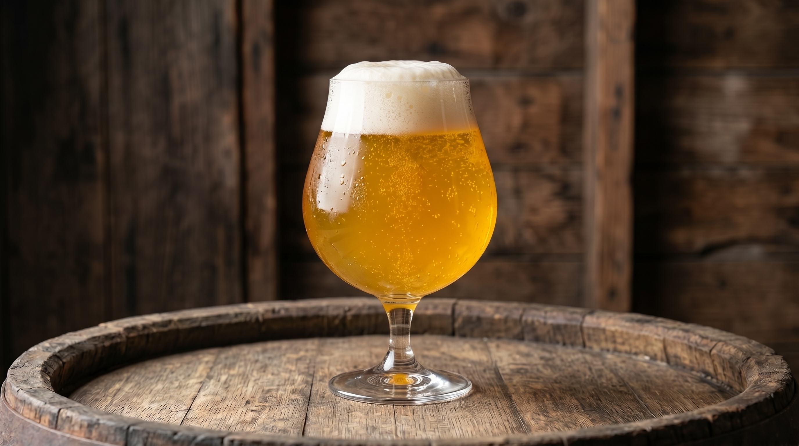
Maracujá
4.0% ABV
Alta Fermentação
Brasil
Estilo leve e refrescante com acidificação e adição direta de maracujá. Apresenta acidez marcante, aroma cítrico e frutado envolvente, ideal para dias quentes.
ABV
4.0%
IBU
5
TEMP
2-4°C
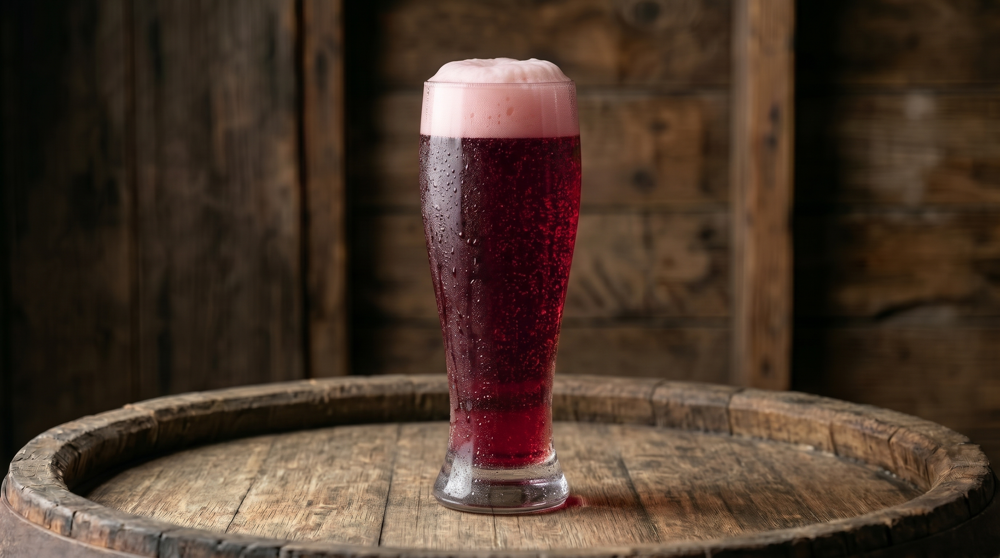
Chopp de Vinho
5.5% ABV
Bebida Mista
Brasil
Bebida mista e refrescante que combina o chopp claro tradicional com o mosto/suco de vinho tinto. Apresenta sabor adocicado, aroma frutado de uva e baixíssimo amargor.
ABV
5.5%
IBU
0
TEMP
2-4°C
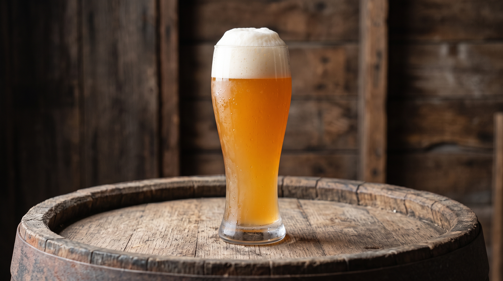
Weiss
5.4% ABV
Alta Fermentação
Baviera
Tradicional cerveja de trigo da Baviera, não filtrada e de aspecto turvo. Destaca-se pelos aromas característicos de banana e cravo.
ABV
5.4%
IBU
12
TEMP
4-7°C
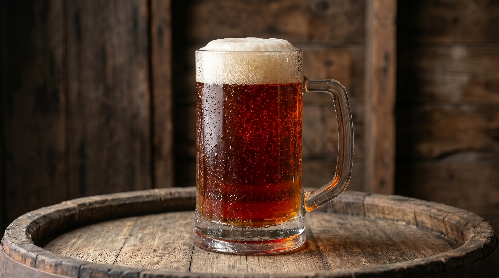
Red Ale
5.0% ABV
Alta Fermentação
Irlanda
Estilo clássico irlandês com marcante tonalidade avermelhada. Destaca-se pelo equilíbrio com notas de malte tostado, caramelo e suave toffee, mantendo um amargor discreto e final limpo.
ABV
5.0%
IBU
25
TEMP
4-8°C
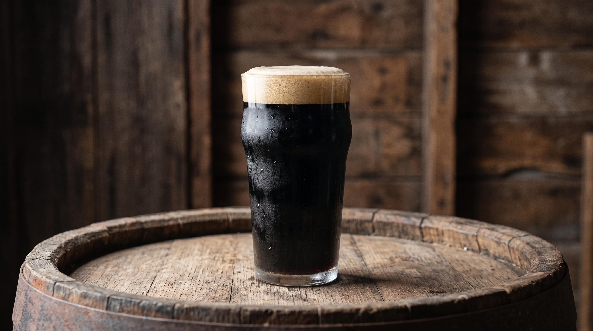
Stout
6.0% ABV
Alta Fermentação
Inglaterra
Estilo escuro, opaco e encorpado. Apresenta notas intensas de café, cacau e chocolate amargo derivados do malte fortemente torrado.
ABV
6.0%
IBU
35
TEMP
8-12°C
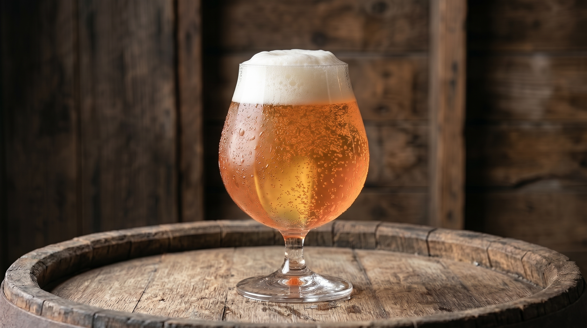
Pêssego
4.2% ABV
Alta Fermentação
Bélgica / Brasil
Cerveja frutada e delicada, com presença marcante da polpa do pêssego. Combina sabor aveludado, suave acidez e retrogosto doce e aromático.
ABV
4.2%
IBU
8
TEMP
2-5°C
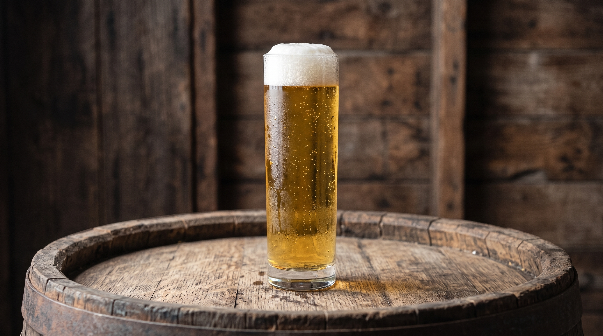
Kölsch
4.8% ABV
Alta Fermentação
Alemanha
Estilo tradicional da cidade de Colônia. É uma cerveja clara, leve e extremamente refrescante, combinando a delicadeza de uma lager com sutis notas frutadas de fermentação ale e suave amargor no final.
ABV
4.8%
IBU
22
TEMP
2-5°C